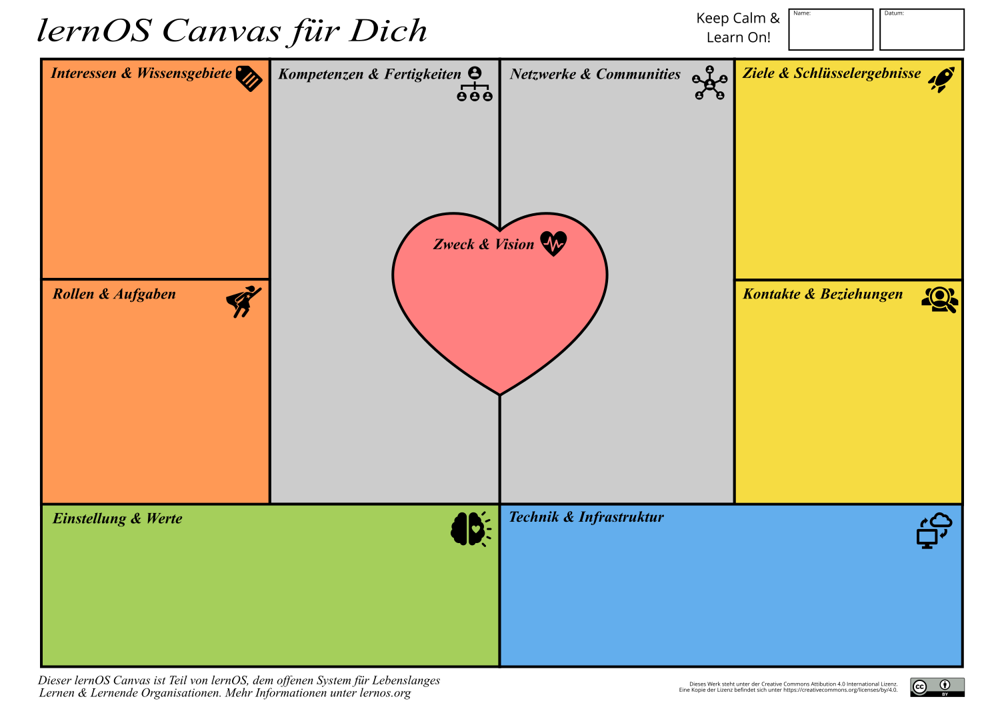
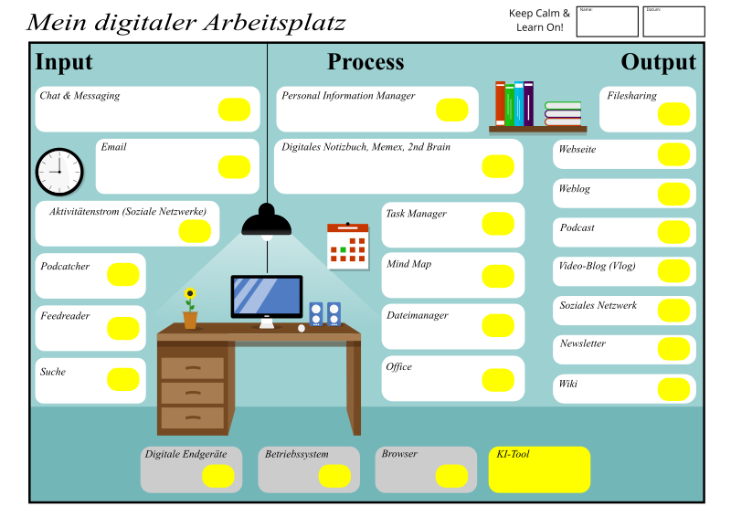

Zurück in die Zukunft
der Arbeit

Vorstellung Simon
- Lebe in Nürnberg, verheiratet, eine Tochter (13)
- Aktuell im 50. Lehrjahr 😉
- Studium Elektrotechnik (Philosophie nebenbei) an der FAU Erlangen-Nürnberg
- Werkstudent am Fraunhofer IIS, darüber Kontakt zu Wissensmanagement (Diplomarbeit)
- Gründung Cogneon im Jahr 2001
- Projekte zu Wissensmanagement und Lernenden Organisation bei Kunden wie Audi, Schaeffler, Bosch, adidas, Siemens Healthineers, DATEV uvm.
- Gründung der lernOS Bewegung zur Verbreitung eines "Lifestyle" des Lebenslangen Lernens im Jahr 2016 (Inhalte Open Source)
- Aktiv in Chaos Computer Club, Corporate Learning Community, Gesellschaft für Wissensmanagement, Sendegate Podcast-Community
Evidenz
"Without data you're just a person with an opinion."
W.E. Deming
Von SOLALA zu SOLADA oder:
was bleibt kleben?
- Scientific (1910): 🔬 Wissenschaftliche Methode (PDCA), 🔁 Prozessorientierung, 👬 Personalentwicklung, 👁️ Augenhöhe: Manager-Worker
- Objectives (1954): 🎯 Ziele statt Micromanagement, 📈 Messung und Evaluation
- Lean (1992): 💩 Eliminierung von Verschwendung, ♻️ Kontinuierliche Verbesserung, 🙌 Respekt & Teamwork
- Agile (2001): 🧡 Mensch im Mittelpunkt, 🤝 Kundenorientierung, 🔎 Inspect & Adapt
- Digital (2004): Daten, 🚧 📊 Perpetual Beta, 👩💻 Improved by Use, 👩❤️💋👩 Trust, 🕸️ Small Pieces Loosely Joined, 🆓 Offenheit
- Artificial Intelligence (2017): 🤖 Kognitive Zusammenarbeit Mensch-Maschine, 🤯 4. Kränkung der Menschheit?
lernOS für Dich Canvas

Beispiel: Zweck & Vision mit Ikigai

Beispiel: Zweck & Vision mit GTD

Für Erfolg
nicht an den
Blättern ziehen,
sondern die
Wurzeln pflegen
lernOS Digitaler Arbeitsplatz

Digitaler Arbeitsplatz + GenAI
